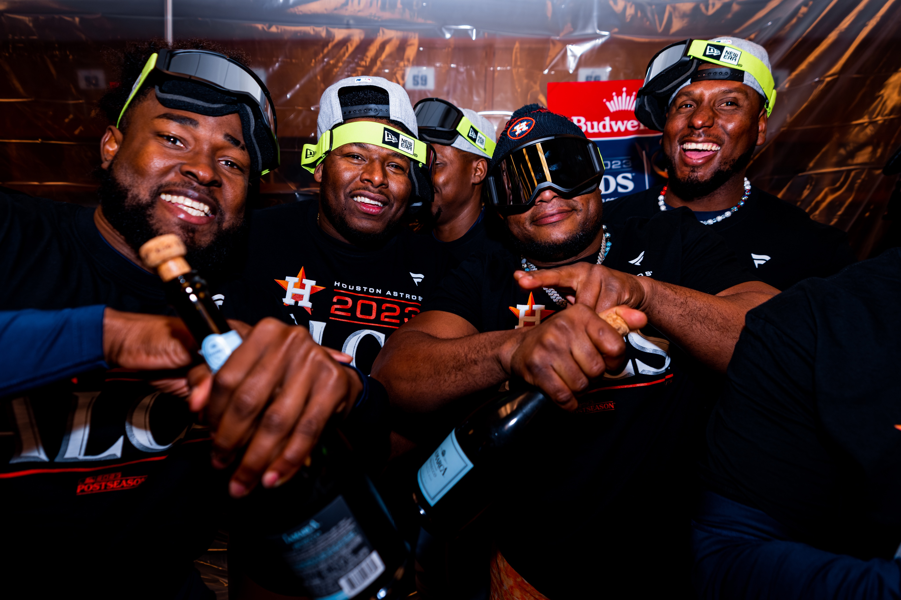

CS 373 Fall 2023: Jacob Villanueva
By Jacob Villanueva

What did you do this past week?
I just finished up an exam for a course Thursday, glad to get passed that. Hopefully I passed with flying colors.
Also this past week, the Astros beat the Minnesota Twins to head to the ALCS for the 7th time in a row. They will now face off in a 7-game series against the Rangers for the battle of Texas. I would be surprised if the rangers win more then two games, and honestly that is being quite generous. Excited to watch the first game sunday.
What's in your way?
I'll reiterate a similar sentiment from last week as things haven't really changed. I believe that I don't have anything in my way. Though I'm currently working to get out of a recent rut I have been feeling, and have made some decisions last week that have freed up my schedule quite a bit. I'm looking to prioritize my head space and relationships over jumping all over every new opportunity put in front of me. With that said, I'm happy with the hard decisions I had to make, and look to continue to be better each week.
What will you do next week?
This upcoming week, IBD #2 is due on Wednesday, so I will prioritize getting that ready for turn in. I also wil be watching the Rangers and Astros series unfold, and get some assignments finished up for other classes as well. All in all, should be a solid week and I'm greatly looking forward to it.
What did you think of Paper #8. The Integration Segregation Principle.
This week I am completing the blog before doing the paper, so I don't have feeling towards the paper yet. Though with that said, I always enjoy reading the papers that are assigned to us, as most of them I find them quite interesting. Being able to annotate and bring some of my own thoughts and connections to the paper allows me to learn better, and allows me to further dive into Computer Science topics.
What did you think of of functions, decorators, and cache?
I greatly enjoyed the topics that we covered this past week, though I got obliterated by the quizzes.
What made you happy this week?
Spending time with people that I have a lot of love for.
What's your pick-of-the-week or tip-of-the-week?
My pick-of-the-week has to be Goodnotes. I use it for all my note taking and writings on my iPad. Great tool.